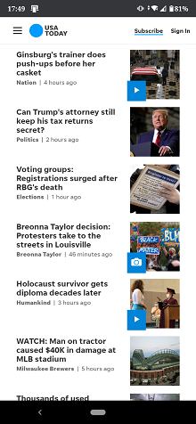

Visual hierarchy
USA today.com
Visual hierarchy is the arrangement of graphic elements in a design in order of importance of each element. The visual weight defines the importance of an element in a design’s hierarchy, communicating to a viewer’s eyes what to focus on and in what order.
Fitts’ law
Apple.com
Fitts’ law is a model that can help designers make educated decisions in user interfaces and web page layouts. It can be used in conjunction with design theories such as visual weight to give user interface items proper hierarchy and placement.
Hick’s Law
Amazon.comHick’s Law is a simple idea that says that the more choices you present your users with, the longer it will take them to reach a decision. It’s common sense, but often neglected in the rush to cram too much functionality into a site or application.